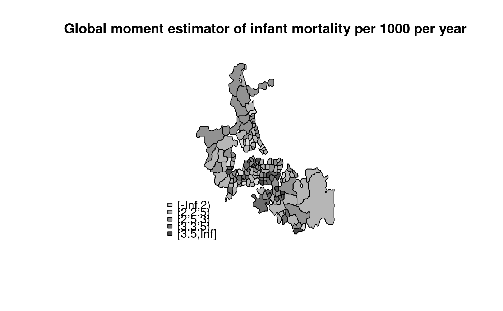

Global Empirical Bayes estimator
EBest.RdThe function computes global empirical Bayes estimates for rates "shrunk" to the overall mean.
EBest(n, x, family="poisson")
Arguments
| n | a numeric vector of counts of cases |
|---|---|
| x | a numeric vector of populations at risk |
| family | either "poisson" for rare conditions or "binomial" for non-rare conditions |
Details
Details of the implementation for the "poisson" family are to be found in Marshall, p. 284--5, and Bailey and Gatrell p. 303--306 and exercise 8.2, pp. 328--330. For the "binomial" family, see Martuzzi and Elliott (implementation by Olaf Berke).
Value
A data frame with two columns:
a numerical vector of raw (crude) rates
a numerical vector of empirical Bayes estimates
global method of moments phi value
global method of moments gamma value
References
Marshall R M (1991) Mapping disease and mortality rates using Empirical Bayes Estimators, Applied Statistics, 40, 283--294; Bailey T, Gatrell A (1995) Interactive Spatial Data Analysis, Harlow: Longman, pp. 303--306, Martuzzi M, Elliott P (1996) Empirical Bayes estimation of small area prevalence of non-rare conditions, Statistics in Medicine 15, 1867--1873.
See also
Examples
if (require(rgdal, quietly=TRUE)) { example(auckland, package="spData") res <- EBest(auckland$M77_85, 9*auckland$Und5_81) attr(res, "parameters") if (require(classInt, quietly=TRUE)) { cols <- grey(6:2/7) cI <- classIntervals(res$estmm*1000, style="fixed", fixedBreaks=c(-Inf,2,2.5,3,3.5,Inf)) fcI <- findColours(cI, pal=grey(6:2/7)) plot(auckland, col=fcI) legend("bottomleft", fill=attr(fcI, "palette"), legend=names(attr(fcI, "table")), bty="n") title(main="Global moment estimator of infant mortality per 1000 per year") } }#> #> acklnd> if (requireNamespace("rgdal", quietly = TRUE)) { #> acklnd+ library(rgdal) #> acklnd+ auckland <- readOGR(system.file("shapes/auckland.shp", package="spData")[1]) #> acklnd+ plot(auckland) #> acklnd+ if (requireNamespace("spdep", quietly = TRUE)) { #> acklnd+ library(spdep) #> acklnd+ auckland.nb <- poly2nb(auckland) #> acklnd+ } #> acklnd+ } #> OGR data source with driver: ESRI Shapefile #> Source: "/home/rsb/lib/r_libs/spData/shapes/auckland.shp", layer: "auckland" #> with 167 features #> It has 4 fieldsdata(huddersfield, package="spData") res <- EBest(huddersfield$cases, huddersfield$total, family="binomial") round(res[,1:2],4)*100#> raw estmm #> 1 42.86 34.44 #> 2 28.95 29.56 #> 3 28.31 28.94 #> 4 21.43 28.93 #> 5 33.33 30.72 #> 6 30.86 30.43 #> 7 33.70 31.85 #> 8 45.61 35.93 #> 9 26.67 28.95 #> 10 29.41 29.95 #> 11 27.76 28.36 #> 12 33.75 31.75 #> 13 32.67 31.84 #> 14 22.91 25.36 #> 15 34.21 32.33 #> 16 33.77 31.72 #> 17 29.09 29.69 #> 18 15.87 24.36 #> 19 40.91 32.11 #> 20 40.00 31.01 #> 21 28.79 29.53 #> 22 38.89 31.47 #> 23 28.32 29.10 #> 24 33.33 31.44 #> 25 13.95 22.36 #> 26 33.77 31.72 #> 27 31.58 30.31 #> 28 33.33 30.42 #> 29 26.67 28.26 #> 30 63.64 33.57 #> 31 34.38 32.24 #> 32 20.00 27.62 #> 33 19.15 24.60 #> 34 25.53 28.54 #> 35 24.14 27.79 #> 36 44.00 32.98 #> 37 25.33 27.95 #> 38 18.18 26.96 #> 39 31.78 30.97 #> 40 32.20 30.88 #> 41 26.19 28.23 #> 42 19.05 26.65 #> 43 16.67 26.81 #> 44 20.00 28.66 #> 45 32.99 31.54 #> 46 50.00 31.97 #> 47 37.21 32.30 #> 48 32.79 31.13 #> 49 38.89 31.47 #> 50 25.00 27.26 #> 51 26.03 28.29 #> 52 30.43 30.18 #> 53 19.75 25.28 #> 54 50.00 31.61 #> 55 21.62 27.67 #> 56 22.22 27.88 #> 57 36.36 30.71 #> 58 31.25 30.22 #> 59 0.00 29.73 #> 60 29.41 29.95 #> 61 31.16 30.71 #> 62 33.33 30.58 #> 63 33.87 32.22 #> 64 30.00 30.04 #> 65 30.34 30.19 #> 66 40.74 35.00 #> 67 46.43 38.96 #> 68 34.21 31.91 #> 69 24.26 26.10 #> 70 29.41 29.75 #> 71 47.17 39.13